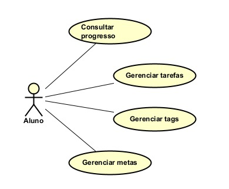
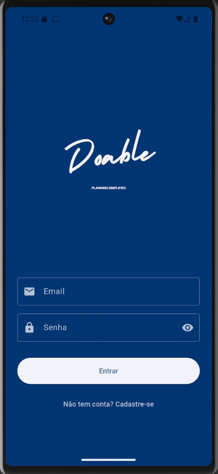
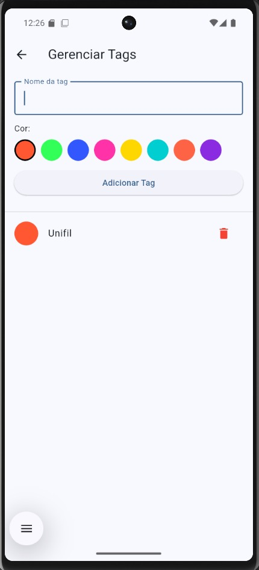
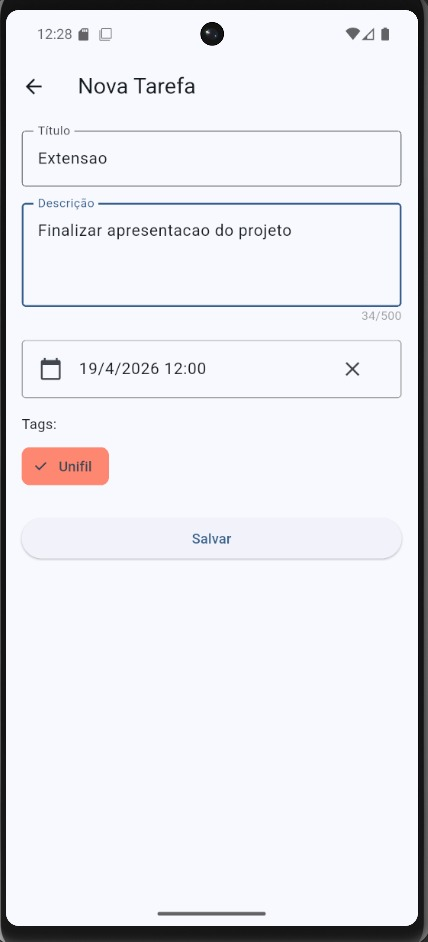
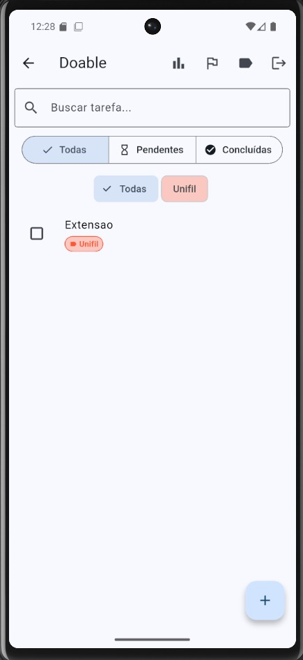
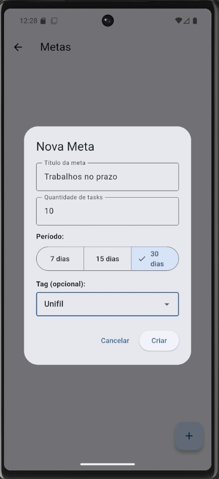
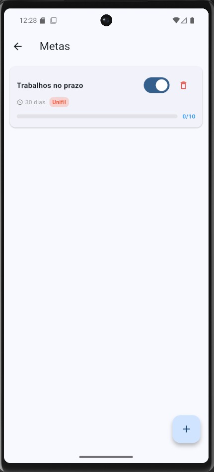

Organize suas tarefas, trabalhos e compromissos de forma simples e eficiente. Nosso aplicativo ajuda estudantes a gerenciar seu tempo, manter-se em dia com atividades acadêmicas e desenvolver hábitos de estudo consistentes. Com ele, você nunca mais esquecerá um prazo importante.
Nosso projeto busca resolver a dificuldade que estudantes enfrentam ao gerenciar tarefas, trabalhos e prazos acadêmicos. A falta de organização muitas vezes causa atrasos, estresse e perda de produtividade.
A To-do-list oferece uma solução simples, prática e intuitiva para que estudantes possam planejar suas atividades, acompanhar o progresso e melhorar o rendimento.
Nosso projeto, a To-do-list, conecta conceitos de programação, design e organização promovendo trabalho em equipe, resolução de problemas e habilidades práticas. Assim, reforçando o aprendizado academico enquanto desenvolvemos uma ferramenta útil para a comunidade estudantil de nossa faculdade.
Usuário entra no aplicativo -> cria uma tarefa informando título, descrição e urgência -> a tarefa é mostrada na seção correspondente ao nível da urgência selecionada -> usuário pode editar, deletar ou marcar a tarefa como concluída conforme necessidade.
O usuário é um estudante de Engenharia de Software e precisa se organizar para o período de avaliações. Para isso, ele abre o aplicativo e cria diversas tarefas de todas as matérias e conteúdos que precisará estudar. Buscando realizar um planejamento inteligente, ele classifica as tarefas por nível de urgência, de acordo com as matérias nas quais mais precisa de nota. Assim, cada tarefa recebe um rótulo de baixa, média ou alta urgência. Por fim, o usuário pode editar a tarefa, marcar como concluída ou deletar conforme necessidade.

Figura: Diagrama de caso de uso do Doable (clique para ampliar)






Público-alvo: Estudantes da faculdade que desejam se organizar melhor e manter suas tarefas em dia.
Benefícios: Organização de tarefas e prazos acadêmicos, acompanhamento do progresso, redução de atrasos, melhoria da produtividade e desenvolvimento de competências organizacionais.
Nosso projeto contribui para a comunidade acadêmica ao incentivar hábitos de estudo consistentes e competências organizacionais que serão úteis tanto na vida universitária quanto profissional.
Confira o código-fonte completo do projeto